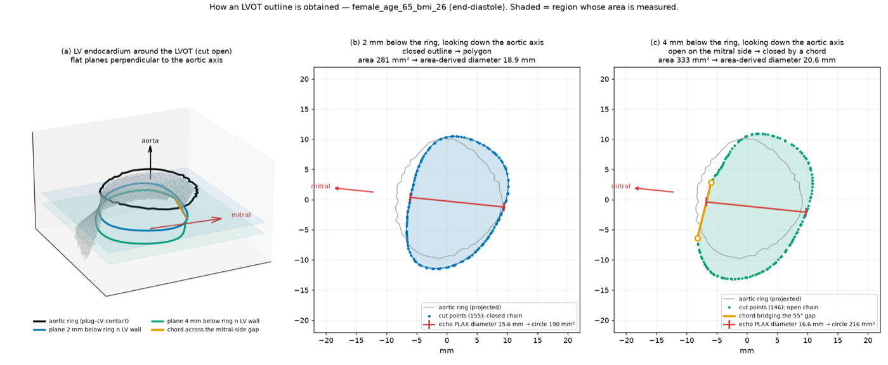
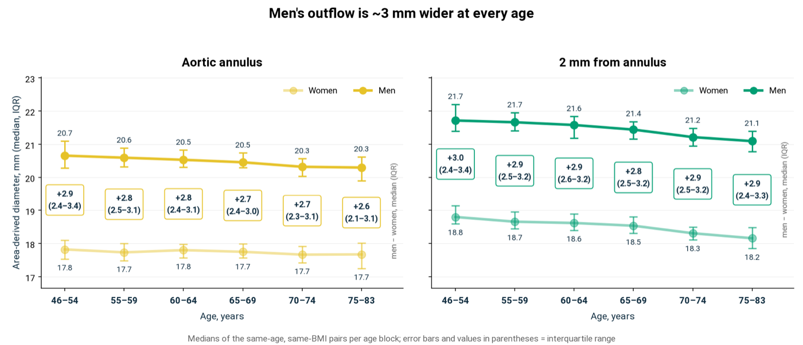
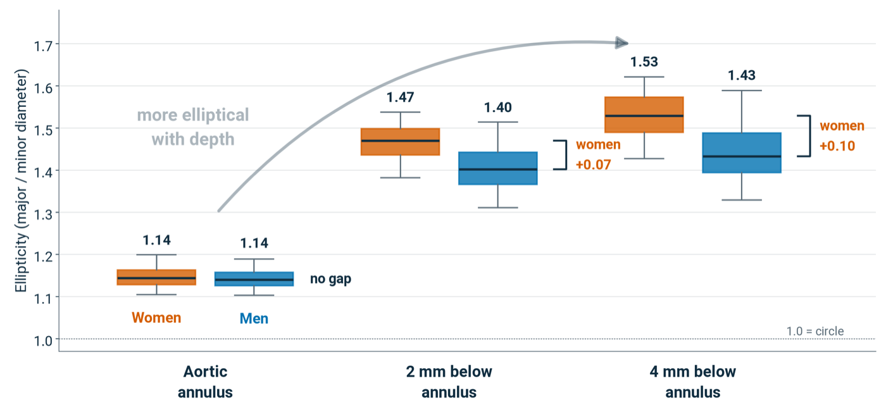
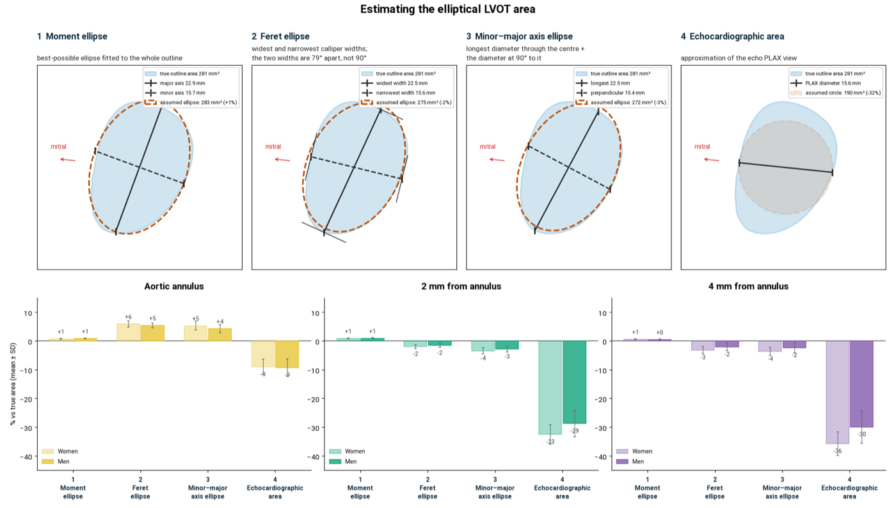
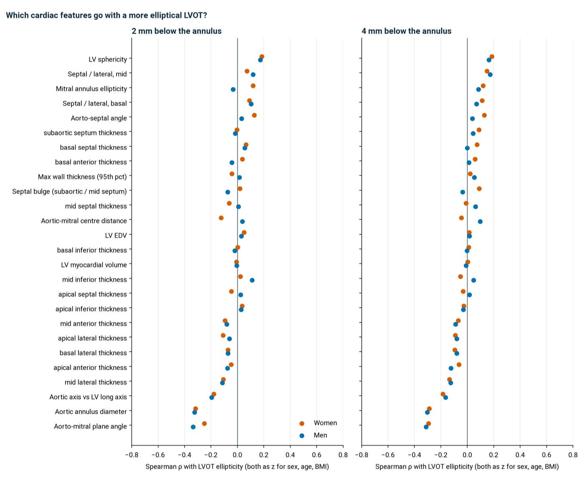

Hi all,
Here is a short summary of where the LVOT side project stands. We measured the left ventricular outflow tract (LVOT) in the 1,423 representative UK Biobank heart meshes released by Ugurlu et al. (PLoS One 2025). Each mesh is the average end-diastolic heart for one sex, age (46–83) and BMI, so the results describe typical hearts, not individuals. All 1,423 meshes were processed with no errors.
How the LVOT is measured
The LVOT has no natural lower edge, so every cut is anchored to the aortic annulus (where the aortic valve meets the LV wall in the mesh). Cuts are flat planes parallel to the annulus, 2 mm below it (main result: a closed ring of wall) and 4 mm below it (second result). The meshes have no valve leaflets, so below about 3 mm the mitral side of the LVOT is open and is bridged with a straight line (Figure 1).

1. Size: men's outflow is about 3 mm wider at every age
Comparing men and women of the same age and BMI (622 pairs), the aortic annulus and LVOT are 2.6–3.0 mm (15–16%) wider in men in every age group. Median LVOT diameter at 2 mm is 18.5 mm in women and 21.4 mm in men. The gap does not narrow with age, and it stays at about 6% after indexing to LV size, so LV size does not fully explain it (Figure 2).

2. Shape: the LVOT is oval, more so in women
The annulus is nearly round (major/minor diameter 1.14 in both sexes). Just below it the LVOT is clearly oval: 1.47 in women vs 1.40 in men at 2 mm, and 1.53 vs 1.43 at 4 mm. Women's LVOT is more elliptical at every age, and this does not change with age. The short axis runs from the septum to the aorto-mitral side, close to the echo parasternal long-axis line (Figure 3).

3. The echo circle underestimates LVOT area by about 30%
Ellipse estimates from two diameters are within 7% of the true outline area. The standard echo calculation, a circle from the PLAX diameter, measures the short axis and underestimates the area by about 33% in women and 29% in men at 2 mm. The extra 4–6 percentage points in women would carry into stroke volume and continuity-equation valve area (Figure 4).

4. What goes with a more oval LVOT: valve-plane geometry, not wall thickness
We added regional wall thickness (12 segments plus the subaortic septum) and the aorto-septal angle, and compared each mesh with others of the same sex, age and BMI. The strongest link is the aorto-mitral angle: a wider (flatter) clinical aorto-mitral angle goes with a more oval LVOT. Across all 998 meshes with normal walls, a 1 SD wider angle goes with about 0.4 SD more ellipticity, and this holds after adjusting for annulus size and wall thickness. A smaller aortic annulus also goes with a more oval LVOT. Wall thickness itself shows almost no link, and meshes with a normal septum but thicker walls elsewhere are no different (Figure 5).

A quick PubMed review fits this: a wider aorto-mitral angle goes with a larger LV and mitral annulus, while a narrower angle goes with older age, a small hyperdynamic LV, aortic elongation, and obstructive HCM and SAM. So if LVOT shape were an early HCM marker, our data suggest a rounder LVOT with a narrow aorto-mitral angle, not a more oval one. That needs testing in individual scans.
Main caveats
Possible next steps
Code, tables and full methods are in the private GitHub repository (ilias-nikolakopoulos/lvot-ukb). Happy to go through any of it.
Best wishes,
[Name]